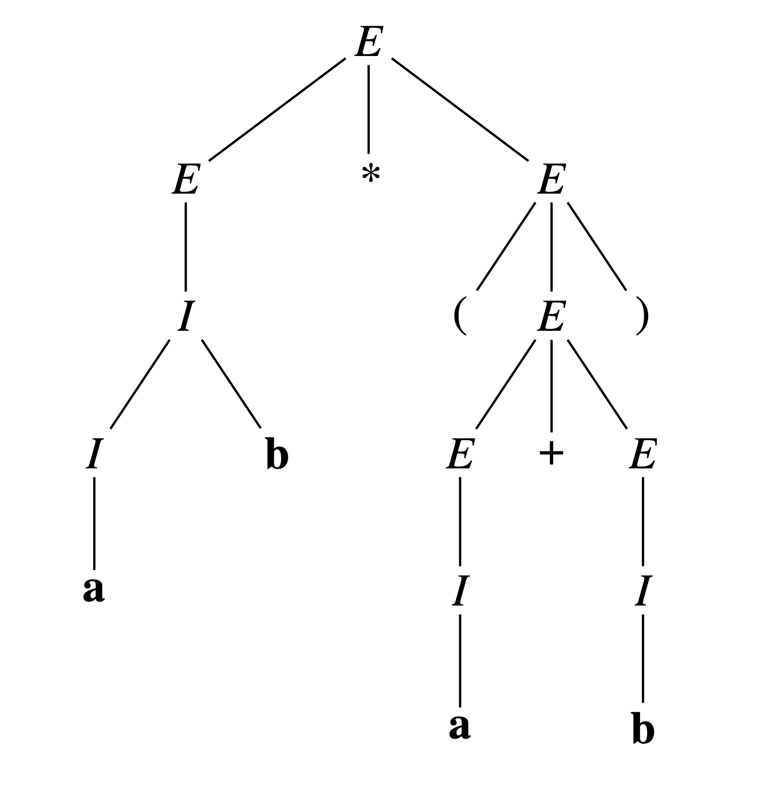
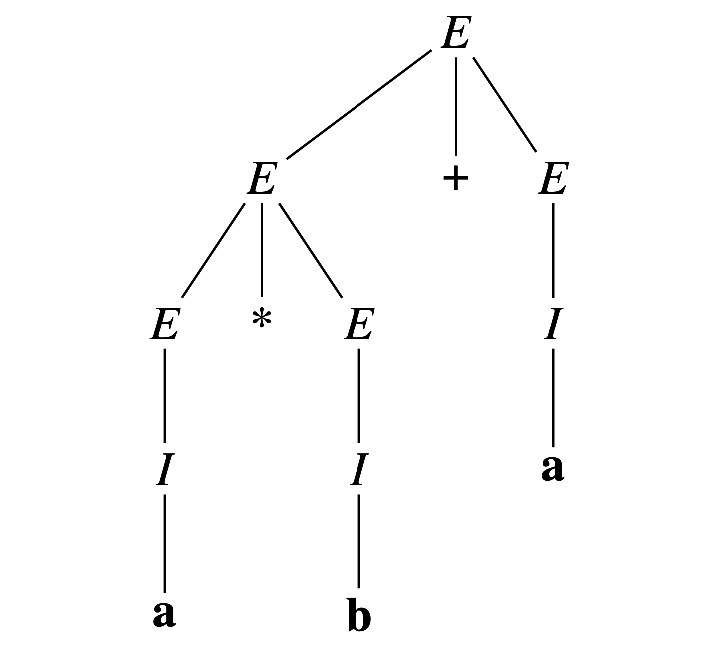
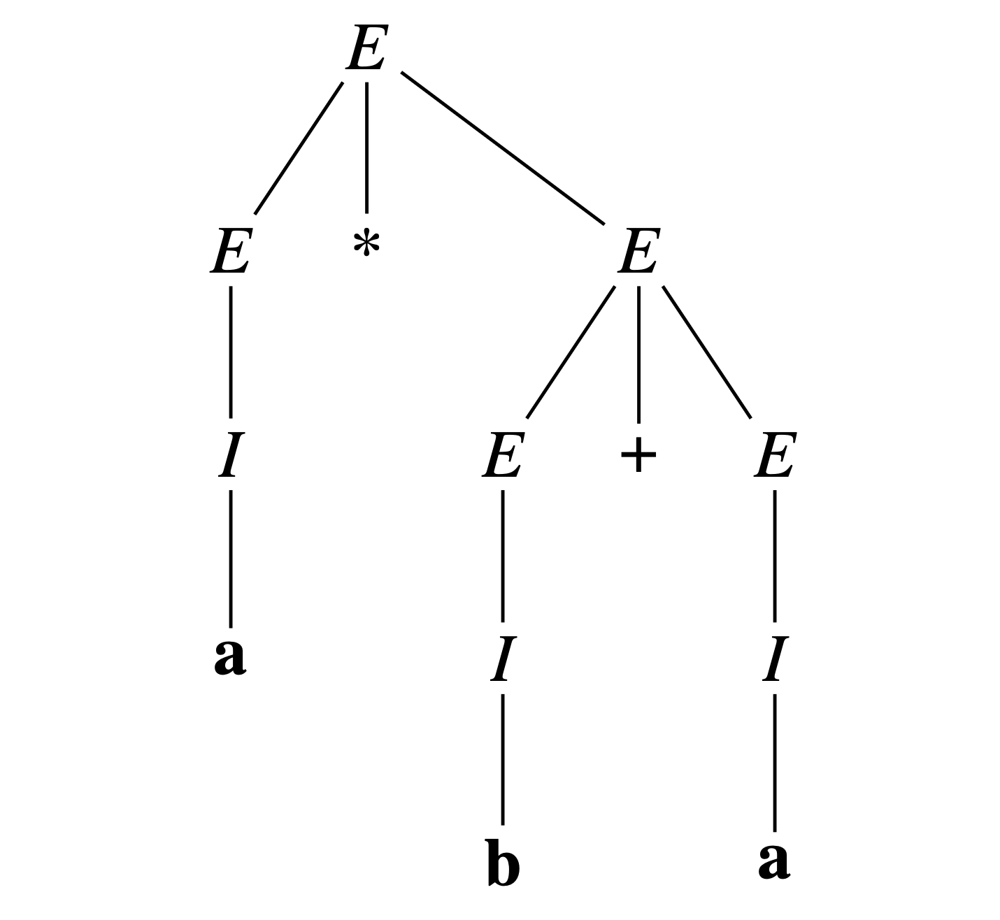

Các mức mô tả ngôn ngữ
Theo Ngôn ngữ học của Noam Chomsky, có 3 mức mô tả ngôn ngữ:
- Ngữ pháp (Grammar): “câu/chuỗi nào đúng?”
- Ngữ nghĩa (Semantics): “câu/chuỗi đúng có nghĩa gì?”
- Ngữ dụng (Pragmatics): “dùng câu có nghĩa như thế nào?”
Với ngôn ngữ lập trình, thường thêm mức hiện thực hoá (Implementation):
“thực
thi sao cho đúng ngữ nghĩa?”
Ngữ pháp
Các thành phần cơ bản của ngữ pháp:
- Bảng chữ cái (Alphabet): tập ký hiệu cơ sở (chữ cái/ký tự).
- Từ vựng (Lexicon): các token (từ/ký hiệu) tạo từ bảng chữ
cái.
- Cú pháp (Syntax): chọn ra tập các chuỗi token tạo thành cụm/“câu”
hợp
lệ.
Ngữ nghĩa
Gán ý nghĩa cho mỗi câu đúng.
“Ý nghĩa” trong lập trình:
- hàm toán học tính được
- vết thay đổi
trạng
thái của máy trừu tượng
Ngữ dụng
Nghiên cứu câu hỏi: “Làm thế nào để sử dụng một câu có ý nghĩa?”.
- Quan tâm đến khía cạnh xã hội, thói quen sử dụng ngôn ngữ.
- Trong lập trình: liên quan đến phong cách lập trình, cách truyền tham số tối ưu.
Hiện thực hoá
Mô tả “cách thực thi một câu đúng sao cho tuân thủ ngữ nghĩa”.
- Quan trọng đối với người thiết kế phần mềm và ngôn ngữ.
- Liên quan đến chi phí thực thi của các cấu trúc.
Ngôn ngữ tự nhiên → mô tả hình thức
- Mô tả cú pháp bằng ngôn ngữ tự nhiên: nhập nhằng, khó dùng cho biên dịch.
- Ngữ pháp tạo sinh (generative grammar, Noam Chomsky) giúp mô tả cú pháp
chặt
chẽ.
- Trong lập trình, công cụ trọng tâm: ngữ pháp phi ngữ cảnh (context-free
grammar).
Ví dụ: chuỗi đối xứng
- Bảng chữ cái: \(A=\{a,b\}\).
- Ngữ pháp tạo sinh: Xây dựng tập hữu hạn các quy tắc để tạo ra các chuỗi đọc xuôi =
đọc ngược (đối xứng,
palindrome).
Ví dụ: chuỗi đối xứng
- \(a,b\) là đối xứng;
- nếu \(s\) đối xứng thì \(asa, bsb\) đối xứng;
- thêm chuỗi rỗng
\(\varepsilon\) để có độ dài chẵn.
Văn phạm* tạo sinh:
\[
\begin{array}{rcl}
P &\to& \varepsilon \\
P &\to& a \\
P &\to& b \\
P &\to& a\,P\,a \\
P &\to& b\,P\,b
\end{array}
\]
* "Văn phạm" = "Ngữ pháp" = "Grammar". "Văn phạm" là từ cũ hơn.
Ngữ pháp phi ngữ cảnh
Định nghĩa
Một
ngữ pháp phi ngữ cảnh (context-free grammar) là bộ tứ \((NT,T,R,S)\) trong
đó:
- \(NT\): tập hữu hạn ký hiệu phi kết thúc (non-terminal).
- \(T\): tập hữu hạn ký hiệu kết thúc (terminal).
- \(R\): tập hữu hạn luật sinh dạng \(V \to w\), với \(V \in NT\) và \(w\)
là chuỗi trên \(T \cup NT\) (có thể rỗng).
- \(S \in NT\): ký hiệu bắt đầu (start symbol).
\(A^*\) và ngôn ngữ hình thức
- Với bảng chữ cái \(A\), ký hiệu \(A^*\) là tập mọi chuỗi hữu hạn trên \(A\) (gồm cả chuỗi rỗng
\(\varepsilon\)).
- Một ngôn ngữ hình thức (formal language) trên \(A\) là một tập con của
\(A^*\).
- Vai trò ngữ pháp: Chọn ra một tập con của \(A^*\) làm ngôn ngữ hợp lệ.
Ví dụ: Biểu thức số học
Văn phạm \(G = (\{E, I\}, \{a, b, +, ∗, −, (, )\}, R, E)\).
Với \(R\) gồm các luật:
- \(E \to I\)
- \(E \to E + E\)
- \(E \to E ∗ E\)
- \(E \to E − E\)
- \(E \to −E\)
- \(E \to (E)\)
- \(I \to a\)
- \(I \to b\)
- \(I \to I a\)
- \(I \to I b\)
Văn phạm này cho phép định nghĩa đệ quy các biểu thức như \(a + b * (a - b)\).
Ký pháp BNF
Backus Naur Form
- Mũi tên \(\rightarrow\) được thay bằng ::=.
- Ký hiệu phi kết thúc đặt trong ngoặc nhọn: <Exp>.
- Dùng dấu gạch đứng | để nhóm các quy tắc có cùng vế trái.
\[
\begin{array}{rcl}
\langle E \rangle &::=& \langle I \rangle \\
&|& \langle E \rangle + \langle E \rangle \\
&|& \langle E \rangle \ast \langle E \rangle \\
&|& \langle E \rangle - \langle E \rangle \\
&|& -\langle E \rangle \\
&|& (\langle E \rangle)
\end{array}
\]
Dẫn xuất (derivation)
Định nghĩa
Với \(G=(NT,T,R,S)\), hai chuỗi \(v,w \in (NT \cup T)^*\):
- \(v \Rightarrow w\): \(w\) thu được từ \(v\) bằng cách thay một ký hiệu phi kết thúc \(V\) trong \(v\)
bởi \(w'\) của một luật \(V \to w'\) trong \(R\).
- \(v \Rightarrow^{*} w\): tồn tại dãy hữu hạn (có thể rỗng) các bước \(v \Rightarrow w_0 \Rightarrow
w_1 \Rightarrow \cdots \Rightarrow w\).
Ví dụ dẫn xuất
Sinh chuỗi \(ab ∗ (a+b)\):
- Bắt đầu từ ký hiệu đầu \(E\), thay \(E\) bằng \(E ∗ E\) theo quy tắc \(E \to E ∗ E\).
- Có thể chọn mở rộng “trái nhất” hoặc “phải nhất”
- Thứ tự khác nhau nhưng có thể cho cùng cấu trúc cây dẫn xuất.
Ví dụ dẫn xuất
Sinh chuỗi \(ab ∗ (a+b)\):
\[
\begin{aligned}
E &\Rightarrow_{3}\; E * E\\
&\Rightarrow_{1}\; I * E\\
&\Rightarrow_{10}\; I\mathbf{b} * E\\
&\Rightarrow_{7}\; \mathbf{ab} * E\\
&\Rightarrow_{6}\; \mathbf{ab} * (E)\\
&\Rightarrow_{2}\; \mathbf{ab} * (E + E)\\
&\Rightarrow_{1}\; \mathbf{ab} * (I + E)\\
&\Rightarrow_{7}\; \mathbf{ab} * (a + E)\\
&\Rightarrow_{1}\; \mathbf{ab} * (a + I)\\
&\Rightarrow_{8}\; \mathbf{ab} * (a + b)
\end{aligned}
\]
Ngôn ngữ sinh bởi ngữ pháp
Định nghĩa
Ngôn ngữ sinh bởi \(G=(NT,T,R,S)\) là
\[
L(G)=\{\, w \in T^{*}\mid S \Rightarrow^{*} w \,\}.
\]
Cây dẫn xuất (parse tree)
Định nghĩa
Một
cây dẫn xuất là cây có thứ tự, sao cho:
- Mỗi nút gán nhãn bởi ký hiệu thuộc \(NT \cup T \cup \{\varepsilon\}\).
- Gốc mang nhãn \(S\); mọi nút trong (interior) mang nhãn thuộc \(NT\).
- Nếu nút \(A \in NT\) có các nút con lần lượt là \(X_1,\ldots,X_k\) thì \(A \to X_1\cdots X_k \in R\).
- Nếu có nút \(\varepsilon\) thì đó là con duy nhất của cha \(A\) và \(A \to \varepsilon \in R\).
Ví dụ

Một cây dẫn xuất cho \(ab ∗ (a+b)\).
Duyệt lá trái → phải
Định nghĩa
- Kết quả duyệt trái→phải của cây là dãy lá thu được bằng định nghĩa đệ quy: duyệt lần lượt các cây con
\(T_1,\ldots,T_k\).
- Một chuỗi thừa nhận cây dẫn xuất \(T\) nếu nó là kết quả duyệt trái→phải các lá của
\(T\).
Tính nhập nhằng của ngữ pháp
Định nghĩa
Một ngữ pháp \(G\) là
nhập nhằng (ambiguous) nếu tồn tại \(w \in L(G)\) sao
cho
\(w\)
thừa nhận nhiều hơn một cây dẫn xuất.
Ghi nhớ: Nhiều dẫn xuất cho cùng \(w\) là bình thường; vấn đề là nhiều
cây.
Ví dụ
- Cùng một chuỗi có thể có hai cây khác nhau → độ ưu tiên toán
tử thay đổi.
- Một cây hiểu là “\( (a∗b)+a \)”; cây khác hiểu là “\( a∗(b+a) \)”.
Ví dụ

Cây dẫn xuất 1 cho \(a * b + a\).

Cây dẫn xuất 2 cho \(a * b + a\).
Khử nhập nhằng
- Thay đổi văn phạm để ép buộc thứ tự ưu tiên và tính kết hợp.
- Thường làm văn phạm phức tạp hơn (nhiều ký hiệu phi kết thúc hơn).
Khử nhập nhằng
Ví dụ
- Chia 4 tầng để “ép” ưu tiên:
- \(E\): mức thấp nhất — cộng/trừ hai ngôi
- \(T\): mức trung — nhân
- \(A\): mức cao — một ngôi \( - \), ngoặc
- \(I\): định danh — chuỗi chữ \(a,b\)
- Hệ quả: \( - \) một ngôi ưu tiên cao nhất, đến \( * \), đến \(+\) và \(-\) hai ngôi.
- Liên kết phải cho toán tử cùng mức: \(a+b+a\) hiểu là \(a+(b+a)\).
Khử nhập nhằng
Ví dụ
\[
G' = (\{E, T, A, I\},\; \{a, b, +, *, -, (, )\},\; R',\; E)
\]
\[
\begin{array}{rcl}
E &\to& T \mid T + E \mid T - E \\
T &\to& A \mid A * T \\
A &\to& I \mid {-}A \mid (E) \\
I &\to& a \mid b \mid I\,a \mid I\,b
\end{array}
\]
Ghi nhớ: mỗi tầng chỉ “gọi” tầng cao hơn → không còn hai cách phân tích cho cùng
một chuỗi.
Ví dụ thực tế
Ngữ pháp nhập nhằng: câu lệnh if/else
if (expression1) if (expression2) command1;
else command2;
- Cần quyết định else thuộc về if nào.
- Java: “else thuộc về if gần nhất mà nó có thể thuộc về”.
Ngữ pháp Java cho if/else
Statement ::= ... | IfThenStatement | IfThenElseStatement |
StatementWithoutTrailingSubstatement
StatementWithoutTrailingSubstatement ::= ... | Block | EmptyStatement |
ReturnStatement
StatementNoShortIf ::= ... | StatementWithoutTrailingSubstatement |
IfThenElseStatementNoShortIf
IfThenStatement ::= if ( Expression ) Statement
IfThenElseStatement ::=
if ( Expression ) StatementNoShortIf else Statement
IfThenElseStatementNoShortIf ::=
if ( Expression ) StatementNoShortIf else StatementNoShortIf
Câu hỏi nhanh
- Vì sao ngữ pháp nhập nhằng không thể sử dụng trong biên dịch?
- Khử sự nhập nhằng thường phải đánh đổi bằng điều gì?
Ràng buộc cú pháp theo ngữ cảnh
- Một chuỗi có thể đúng theo ngữ pháp nhưng chưa chắc hợp lệ ở vị trí xuất hiện.
- Ví dụ: I = R+3; có thể cần:
- khai báo \(I, R\) trước khi dùng;
- kiểu của R+3 tương thích với kiểu của \(I\).
- Những ràng buộc này không được mô tả bằng CFG vì phụ thuộc ngữ cảnh.
Ví dụ
Ràng buộc ngữ cảnh tĩnh
- Định danh phải được khai báo trước khi dùng (Pascal, C, Java).
- Số đối số thực tế = số tham số hình thức (C, Pascal, Java...).
- Kiểu biểu thức gán phải tương thích kiểu biến đích.
- Không cho phép gán vào biến điều khiển vòng for (Pascal).
- Trước khi dùng biến phải có phép gán (Java, Python).
- Ghi đè phương thức chỉ khi chữ ký “khớp/compatible” (Java/Java5).
Thuật ngữ hay dùng
- Cú pháp (syntax): phần mô tả được bằng CFG.
- Ngữ nghĩa tĩnh (static semantics): ràng buộc ngữ cảnh kiểm tra được từ
văn bản
chương trình.
- Ngữ nghĩa động (dynamic semantics): mọi điều xảy ra khi
chạy
chương trình.
Ngữ nghĩa tĩnh
Ví dụ:
- Kiểm tra kiểu (Type checking).
- Số lượng tham số hàm phải khớp với khai báo.
- Gán giá trị cho biến điều khiển vòng lặp for (bị cấm trong Pascal).